The Trail - Day 2
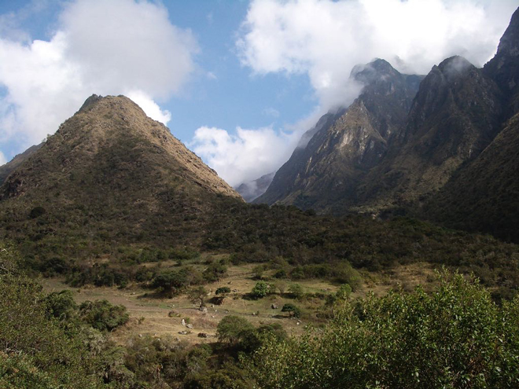
From Huayllabamba the trail climbed steeply along the banks of the River Llullucha and through beautiful cloud forest towards Warmiwanuska (Dead Woman's Pass) at 4,200m. This was the highest point of the trek and the altitude made it a slow ascent with the air becoming increasingly thin.
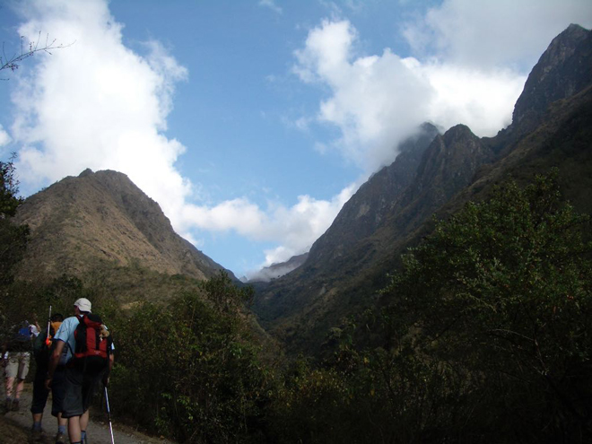
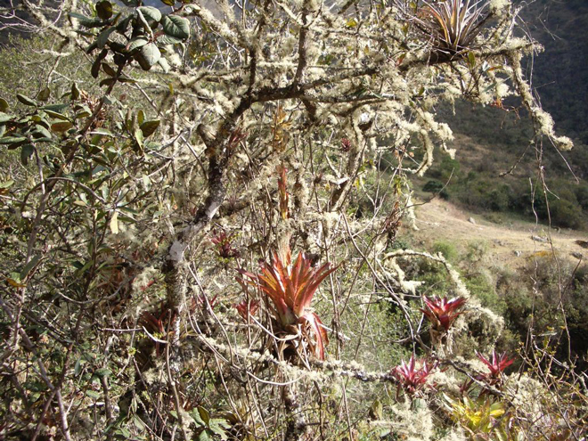
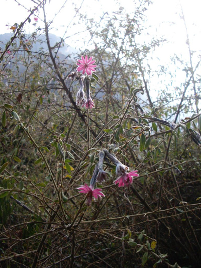
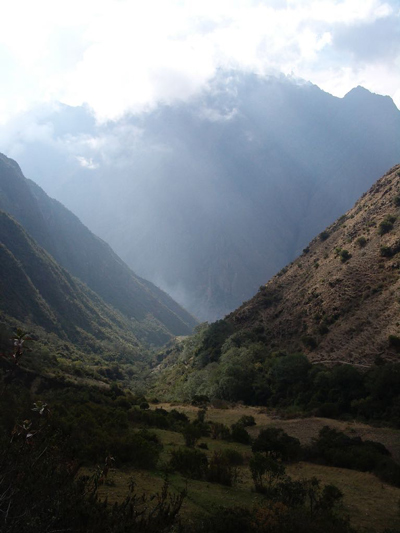
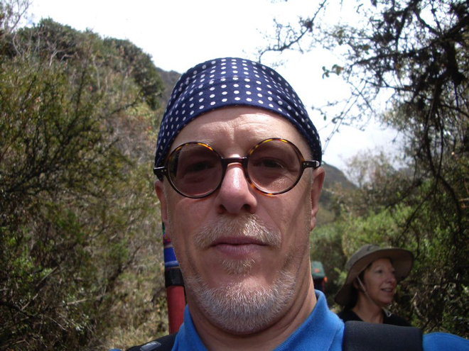
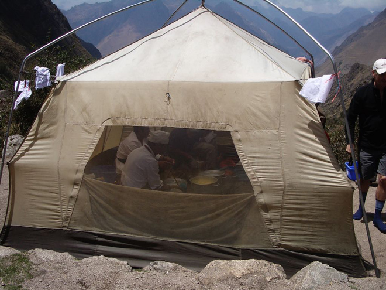
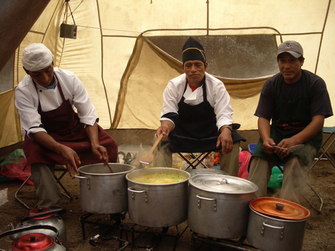
And then, in the middle of nowhere, three women selling all sorts of sweets and beverages. Where on earth did they spring from?
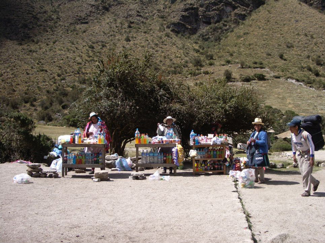
.
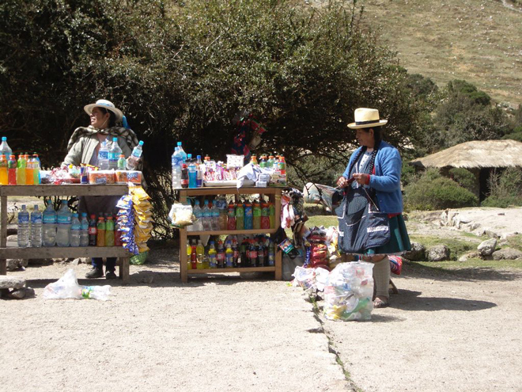
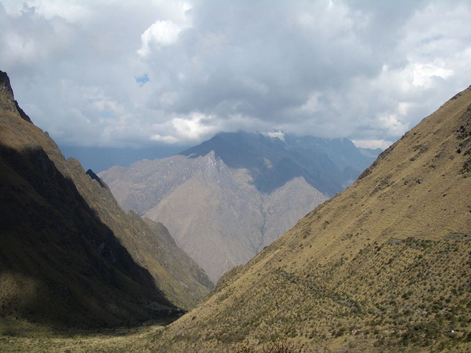
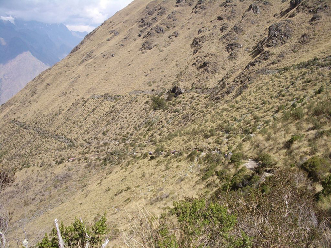
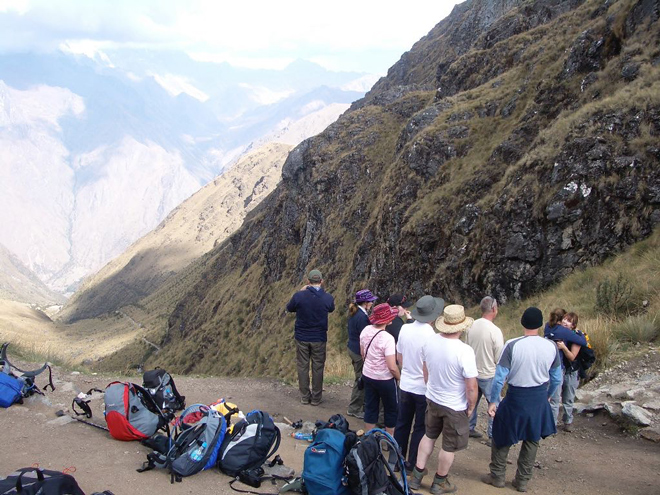
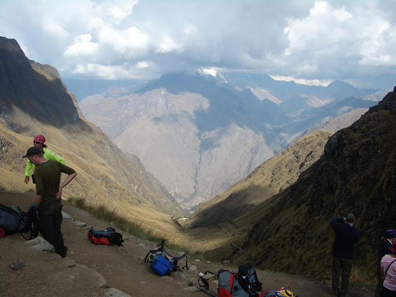
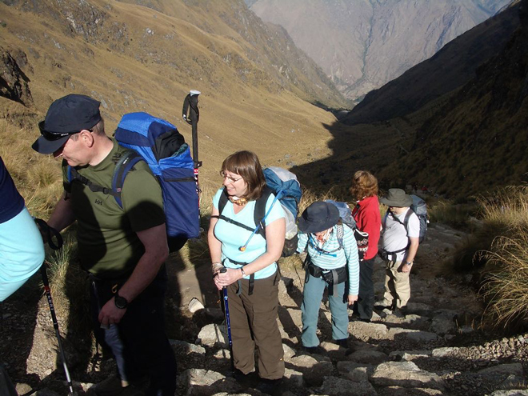
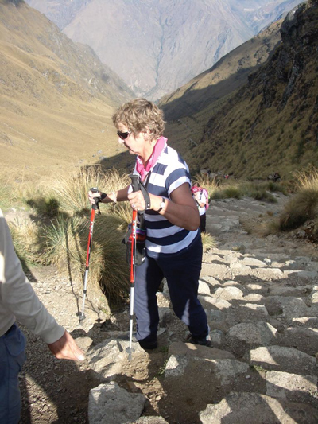
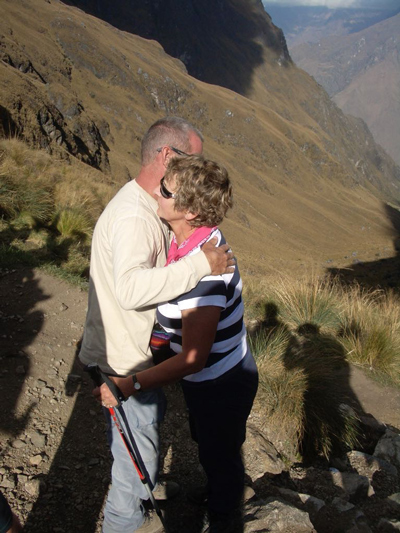
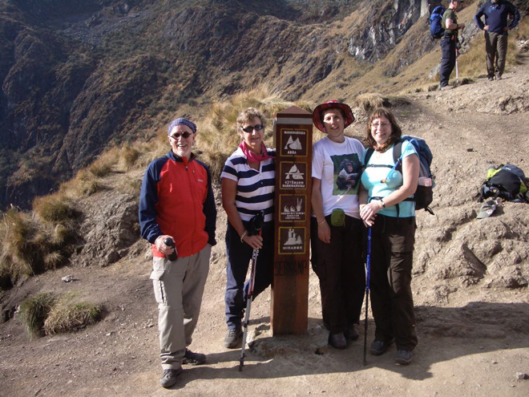
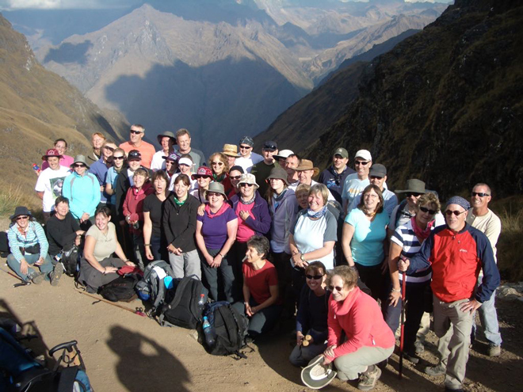
Then a steep and tiring descent to the camp in picturesque surroundings near the River Pacamayo (3,600m).
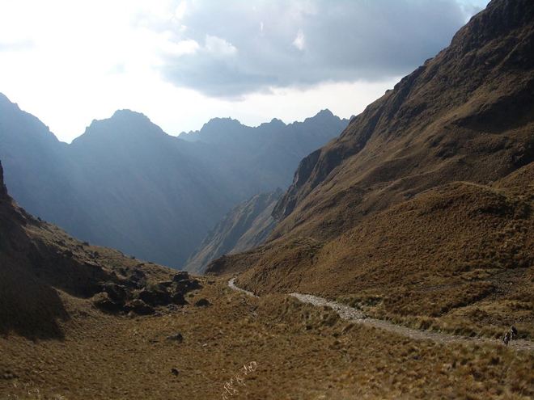
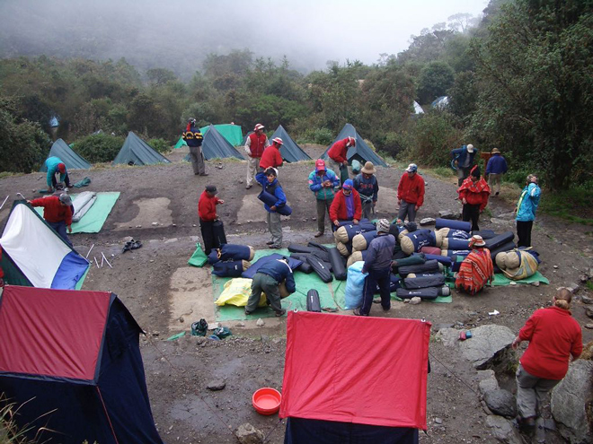